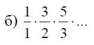

В некоторых видах спортивных соревнований выступление каждого спортсмена независимо оценивается несколькими судьями, затем из всей совокупности оценок удаляются наиболее высокая и наиболее низкая, а для оставшихся оценок вычисляется среднее арифметическое, которое идет в зачет спортсмену. Если наиболее высокую оценку выставили несколько судей, то из совокупности оценок удаляется только одна такая оценка; аналогично поступают и с наиболее низкими оценками. Даны натуральное число N, действительные положительные числа а1,а2,... . Считая, что числа а1,а2,...,аn - это оценки, выставленные судьями одному из участников соревнований, определить оценку, которая пойдет в зачет спортсмену.
Дано натуральное число n. Найти значение числа, полученного следующим образом: из записи числа n выбросить цифры 0 и 5, оставив прежним порядок остальных цифр.
Дано число n. Знайти добуток перших n множників.
